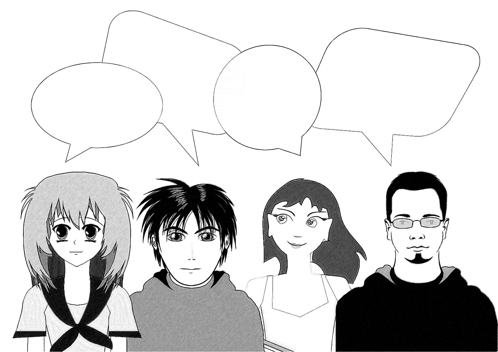
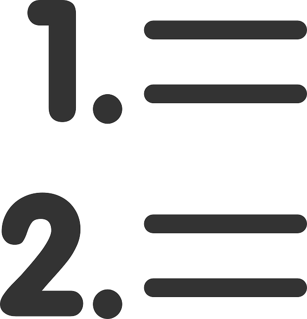

Objetivos de aprendizaje:
- Identificar el mensaje que se desea transmitir a través de una imagen, a quien está dirigida y cuál es su finalidad
- Reconocer la función que cumplen las imágenes en el mensaje que se desea transmitir.
Enunciado: Observa detenidamente la imagen y responde las preguntas que aparecen a continuación.
-
1.¿Cuál es el mensaje de la imagen?
-
2. ¿A quién va dirigido el mensaje?
-
3. ¿Cuál es la finalidad de la imagen?
-
4. ¿Qué función cumple los dibujos que acompañan al texto?
A continuación, se dan ejemplos de esta modalidad discursiva:
2.1 ¿Qué es el texto argumentativo?
2.2 Orientaciones generales para construir un texto argumentativo
Estas son algunas recomendaciones para tener en cuenta al momento de escribir un texto argumentativo:
Enunciado: puede consultar los siguientes enlaces para profundizar sobre el texto argumentativo.
- Contenido educativo: actividades sobre el texto argumentativo
- Video: la argumentación: concepto y estructura
3.1 Sobre el texto argumentativo
Objetivo de aprendizaje: comprender el objetivo del texto argumentativo, sus características y tipos.
Enunciado: relaciona los enunciados que se encuentran en el costado izquierdo con las palabras que se encuentran en la parte inferior. Para ello arrastra con las opciones al enunciado que corresponde.
Opciones:
3.2 Comprensión de lectura
Objetivo de aprendizaje: identificar la silueta textual y el propósito comunicativo del texto argumentativo
Enunciado: realiza la siguiente lectura y luego responde las preguntas que corroboran la comprensión del tema.
Toca Haz clic en cada tema para leer la información.
Lectura: El texto argumentativo[1]
- 1. El texto argumentativo
-
Tomado de Personas con globos de diálogo. [Ilustración] por Geralt, 2014, Pixabay.
Los textos argumentativos son los más empleados por estudiantes, profesores, científicos, políticos, etc. A través de la argumentación se expresan ideas u opiniones, defendiendo las propias y rechazando las que se oponen a ellas. La argumentación es la base del convencimiento, del razonamiento, de la persuasión, de la demostración y del conocimiento humano, de ahí la importancia y necesidad de conocer cómo se organizan este tipo de textos.
Por otra parte, no sería posible concebir una sociedad democrática, como la nuestra, sin que las personas pudiéramos expresar nuestras opiniones; por esta razón, deben estar perfectamente fundamentadas pues, de lo contrario, no tendrían el peso suficiente para tratar de cambiar conductas o convencer al contrario, entre otros propósitos. Además, en nuestras relaciones personales, laborales o sociales tenemos que saber tratar y resolver conflictos, por ello es necesario saber elaborar textos argumentativos, orales o escritos: reconocer su esquema general y sus características; los propósitos y los recursos discursivos más empleados; identificar y comprender las ideas más importantes a favor o en contra de un tema polémico.
- 2. ¿Qué es una argumentación?
-
Una argumentación es un texto que tiene como fin o bien persuadir al destinatario del punto de vista que se tiene sobre un asunto, o bien convencerlo de la falsedad o veracidad de una teoría, para lo cual debe aportar determinadas razones. Aparte de esta intención comunicativa, el texto argumentativo se caracteriza por una organización del contenido que lo define como tal: se presentan unas opiniones, que deben ser defendidas o rechazadas con argumentos, y que derivan de forma lógica en una determinada conclusión o tesis.
- 3. ¿Cuáles son sus propiedades textuales?
-
Al igual que todos los textos, cuando elaboramos una argumentación debemos tener en cuenta las propiedades textuales de adecuación, coherencia y cohesión:
Adecuación:
es muy importante conocer el contexto comunicativo y el tipo de argumentación, pues no es lo mismo diseñar un anuncio publicitario para la televisión que redactar un texto escrito de opinión sobre un tema determinado, como una tarea de clase. Aunque el objetivo en ambos casos es el mismo, convencer, los destinatarios y la situación comunicativa son completamente diferentes.Coherencia:
como hemos visto en los textos analizados en unidades anteriores, las ideas planteadas y los argumentos para defenderlas o rechazarlas deben estar de acuerdo con un orden lógico, sin que existan contradicciones que puedan dar lugar a ambigüedades o confusión.Cohesión:
en el texto argumentativo es donde se hace más necesario el empleo de conectores y organizadores textuales, debido a que se plantean y defienden ideas, en muchas ocasiones contrapuestas, o bien se emplean distintos tipos de argumentos, necesarios para cumplir el objetivo comunicativo de convencer.
- 4. Estructura del texto argumentativo
-
Son tres los elementos o partes en las que se divide generalmente una argumentación: la tesis, el cuerpo argumentativo y la conclusión. A pesar de que la mayoría de los textos argumentativos suele presentar estos tres elementos, puede ocurrir que esté ausente alguno de ellos: la tesis, en muchos casos, es sustituida por una exposición inicial sobre el tema que se va a tratar. Es muy importante, por esta razón, señalar que el texto expositivo y argumentativo funcionan conjuntamente en el caso de la argumentación: no podemos defender ideas o situaciones sin haberlas puesto, previamente, en conocimiento de nuestro receptor.
La tesis
Es la idea fundamental en torno a la que se reflexiona; puede aparecer al principio o al final del texto y ocupa un párrafo, también al inicio o al final. En este último caso muchas veces se omite la conclusión por considerarse innecesaria, pues es la tesis la que ocupa su lugar.
Es muy importante que la tesis esté formulada de forma clara, dado que es el núcleo en torno al cual gira la argumentación que se va a desarrollar a continuación.
El cuerpo de la argumentación
A partir del planteamiento de la tesis, en un nuevo párrafo, empieza la argumentación propiamente dicha. Se van ofreciendo argumentos de distinto tipo, de los que hablaremos más adelante, ejemplos y otra serie de recursos que tienen como fin fortalecer la opinión defendida y refutar la contraria.
La refutación o rechazo de las ideas contrarias es de gran importancia, pues en ella puede encontrarse el éxito de nuestro objetivo (recordemos: convencer a los demás).
Debe prestarse especial atención a los argumentos que empleamos para rechazar ideas contrarias a la nuestra: podemos emplear la ironía, introducir elementos subjetivos, pero siempre desde el respeto y la tolerancia ante las ideas ajenas, sin caer en el insulto o comentarios despectivos que podrían ofender a alguna persona.
La conclusión
Constituye la última parte de nuestra argumentación. Recuerda que un buen principio es fundamental, pero, en este caso, un buen final todavía lo es más. La conclusión recoge un razonamiento lógico derivado de la argumentación precedente: es muy importante que lo que formulemos al final sea coherente con todo lo anterior, de lo contrario, todo el esfuerzo realizado habrá sido inútil.
TESIS CUERPO DE LA ARGUMENTACIÓN CONCLUSIÓN - Idea fundamental que se defiende.
- Debe formularse de forma clara.
Relación de argumentos para defender la idea planteada o refutar ideas contrarias a ella. Cierre del texto, tras el razonamiento lógico derivado de la argumentación precedente.
- 5. Tipos de argumentos
-
Tomado de Hoja de papel dentro de una carpeta abierta [Ilustración] por OpenIcons, 2013, Pixabay.
Para conseguir el propósito de convencer o persuadir al receptor de un texto argumentativo existen una serie de argumentos que nos pueden ser de gran ayuda. Entre ellos destacamos:
5.1 El argumento de autoridad
Se trata de un recurso que se basa en testimonios o citas de personas, célebres en muchos casos, o especialistas en el tema sobre el cual redactamos nuestra argumentación. De esta forma, podemos conseguir adelantarnos a posibles opiniones contrarias, además de reforzar la idea o tesis que queremos defender, apoyándonos en expertos que gozan de un gran respeto o prestigio dentro de la sociedad:
Según reconocidos especialistas de nutrición de todo el mundo, la dieta mediterránea basada en el consumo de frutas, verduras, pescado, y el aceite de oliva, es la mejor para llevar una vida sana y equilibrada.
5.2 El argumento de la mayoría
Es otro tipo de argumento muy empleado en el que se recurre al sentir de la mayoría de la gente o de la sociedad. Al igual que en el caso anterior, tiene como finalidad reforzar aquello que queremos defender, presentándolo no como una idea propia, sino como algo compartido por la mayoría de las personas:
Todo el mundo piensa que la idea puede funcionar.
5.3 El argumento del conocimiento y la experiencia: los datos y los ejemplos
Un texto argumentativo tiene con frecuencia una parte expositiva, en la cual se incluyen datos diversos, datos en los que nos apoyamos para argumentar.
Las experiencias que hemos vivido, lo que nos ha pasado a nosotros y a los que nos rodean, también son una útil fuente de datos, que podemos incluir en nuestra argumentación, si se relacionan con el tema que estamos tratando.
Es frecuente utilizar los ejemplos para ilustrar lo que se quiere defender o rechazar. Con ellos se hace referencia a situaciones vividas por nosotros mismos o por personas cercanas de las que tenemos conocimiento. Es un recurso muy efectivo para persuadir al receptor o receptores a quienes nos dirigimos:
Yo misma, y algunos de mis amigos, lo hemos probado y funciona.
- 6. El orden de los argumentos
-
Tomado de Lista de elementos [Ilustración] por Clker-Free-Vector-Images, 2012, Pixabay.
Es muy importante realizar una adecuada presentación y organización de los argumentos que queremos utilizar, de forma que facilitemos su comprensión al receptor. Estas son algunas indicaciones que debes tener en cuenta:
- Evita las divagaciones y los juegos de palabras: céntrate en la idea que vas a defender y en la exposición clara de los argumentos que utilices; que no se conviertan en palabras sin sentido
- Utiliza párrafos para distribuir y organizar cada uno de los argumentos: los párrafos tienen la ventaja de presentar la información esencial de una idea con los argumentos a favor o en contra. Si el texto está adecuadamente dividido en párrafos es más fácil de leer y de interpretar por el receptor o receptores.
- Relaciona los distintos párrafos empleando conectores: son los indicadores de que el razonamiento y el proceso argumentativo siguen un orden lógico. Los párrafos no funcionan aisladamente, sino que forman parte de un conjunto, al que contribuyen dando unidad y sentido global al texto. Entre ellos pueden existir distintos tipos de relación: oposición, causa-consecuencia, etc
- 7. Redacción de textos argumentativos
-
 Tomado de Hoja de papel y lápiz [Ilustración] por Clker-Free-Vector-Images, 2012, Pixabay.
Tomado de Hoja de papel y lápiz [Ilustración] por Clker-Free-Vector-Images, 2012, Pixabay.Igual que en los textos de las unidades anteriores (narrativos, descriptivos), cuando redactamos una argumentación existe una serie de rasgos lingüísticos que la caracterizan y que debemos aplicar:
- El empleo de la primera persona gramatical (yo o nosotros), dado que se expresa una opinión propia, en algunos casos incluso sentimientos y emociones.
- Suelen predominar sustantivos abstractos de acuerdo con el tema que se trate: pueden ser de tipo teórico o científico.
- Es frecuente el uso de verbos que expresan voluntad (gustar, querer, desear); verbos de dicción (decir, preguntar, manifestar), y de pensamiento (creer, opinar, pensar).
- A veces se emplea la interrogación retórica para llamar la atención del receptor e invitarlo a la reflexión sobre el tema en cuestión.
- Predominio de oraciones largas que expresan causa, consecuencia y condición.
- Empleo de adjetivos valorativos, pues se expresa una opinión o juicio subjetivo.
De acuerdo con la lectura, responde las siguientes preguntas.
Constituye la finalidad o intención comunicativa del texto argumentativo:
- Informar
- Convencer
- Expresar
Son tipos de argumentos para persuadir sobre un tema determinado:
- Imágenes, comentarios y noticias.
- Ejemplos, tablas y narraciones
- Ejemplos, anécdotas y datos estadísticos
En la construcción de un texto argumentativo se debe evitar:
- Las divagaciones y los juegos de palabras.
- La objetividad.
- El uso de imágenes.
Son las tres partes en las que se divide un texto argumentativo:
- Idea principal, conclusión y ejemplos.
- La tesis, el cuerpo argumentativo y la conclusión.
- Título, tesis y conclusión
Son propiedades textuales que debemos tener en cuenta en el momento de elaborar una argumentación:
- Adecuación
- Coherencia y cohesión
- Todas las anteriores
3.3 Análisis de lectura
Objetivo de aprendizaje: identificar las partes más importantes e intención comunicativa del discurso argumentativo
Enunciado: lee el texto. Luego, responde las preguntas presionando en el botón "Seleccionar texto" y seleccionando en el discurso la respuesta correspondiente.
Podrá ver para cada pregunta el porcentaje de acierto de la respuesta seleccionada.
Hoy en día, la corrupción se ve en todas partes en la sociedad como una enfermedad infecciosa. La corrupción se ha extendido a la vida pública común, la política, los gobiernos centrales, los gobiernos estatales, las empresas, las industrias, etc. No ha dejado ningún campo libre.
Corromper es destruir, es volver impuro un objeto que antes no lo era.
La corrupción aumenta día a día en lugar de disminuir o estabilizarse debido al continuo aumento en el apetito de las personas por dinero, poder, posición y lujo.
Hemos olvidado la verdadera responsabilidad de ser humano solo por el dinero. Necesitamos entender que el dinero no es todo y que no es una cosa estable. No podemos quedárnoslo para siempre, solo puede darnos avaricia y corrupción. Deberíamos dar importancia a la vida basada en valores y no a la vida basada en el dinero.
Es cierto que necesitamos mucho dinero para vivir una vida digna, sin embargo, no es excusa para socavar el derecho de otras personas a favor de nuestro egoísmo y avaricia.
1. ¿Cuál es el tema del texto?
2. ¿Cuál es la tesis que el autor mantiene sobre el tema que trata?
3. Subraya dos argumentos que sostiene la tesis:
4. ¿Cuál es la conclusión del texto?
Objetivo de aprendizaje: construir un contraargumento.
Enunciado: de acuerdo con la lectura responde la pregunta.